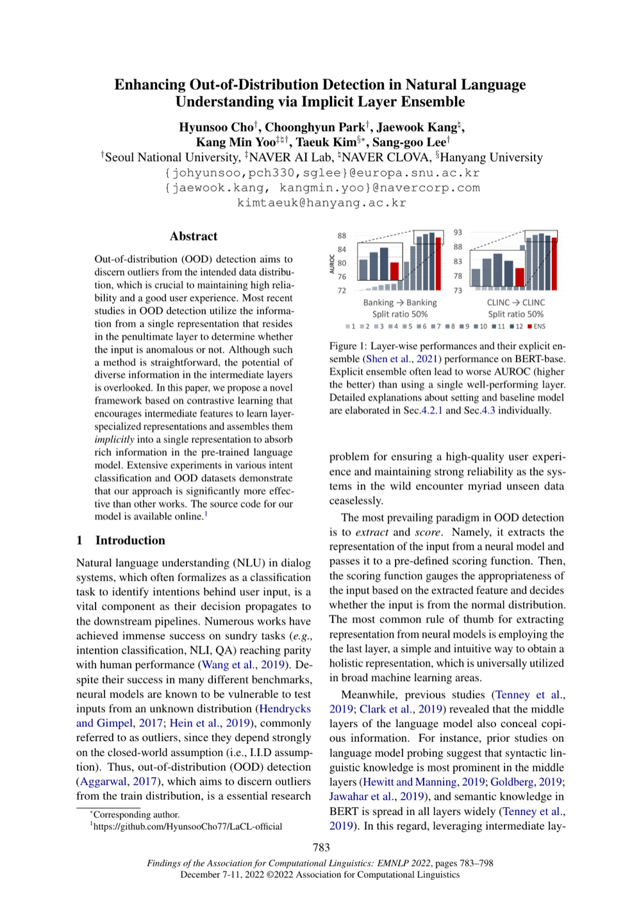

EN
KO
← 전체 논문 목록
Enhancing Out-of-Distribution Detection in Natural Language Understanding via Implicit Layer Ensemble
EMNLP 2022 Findings
Hyunsoo Cho, Choonghyun Park, Jaewook Kang, Kang Min Yoo, Taeuk Kim, Sang-goo Lee
한줄 요약
암시적 레이어 앙상블을 통해 자연어 이해에서 분포 외 탐지를 향상시키는 방법

Figure 1.
암시적 레이어 앙상블을 통한 자연어 이해에서의 분포 외 탐지 향상 프레임워크. 트랜스포머 레이어의 중간 표현을 활용합니다.
핵심 내용
학습 데이터 분포 밖의 입력을 정확하게 식별하기 위한 향상된 OOD 탐지 기법 제안
모델의 신뢰도 추정을 개선하여 실제 배포 환경에서의 안전성 강화
링크
ACL Anthology
Detection